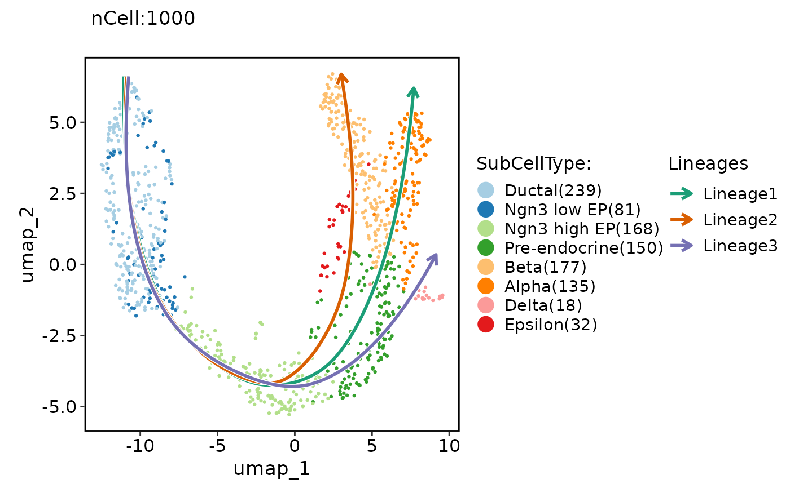
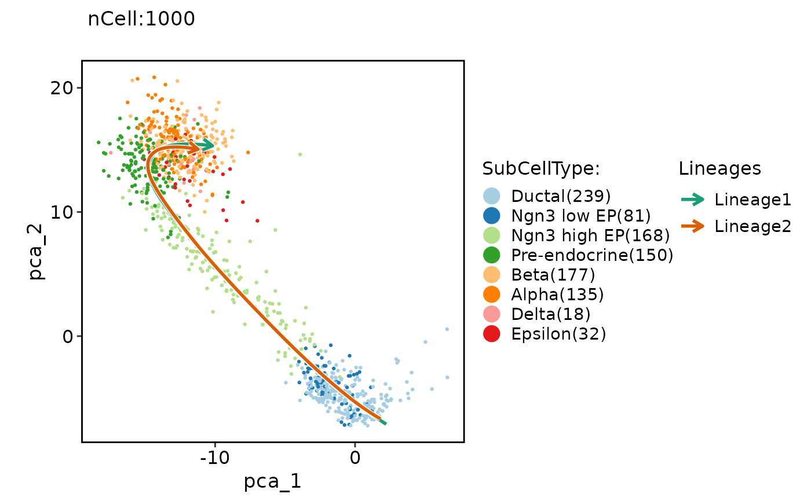
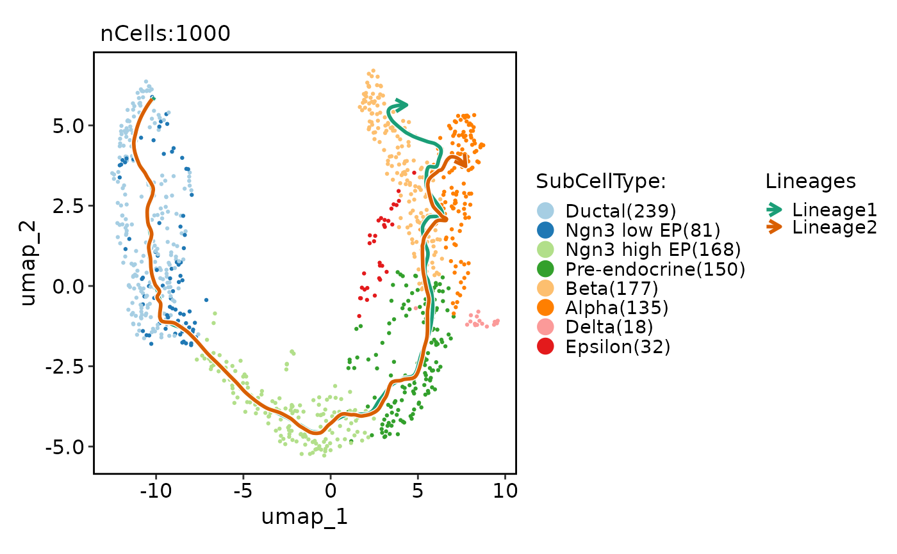
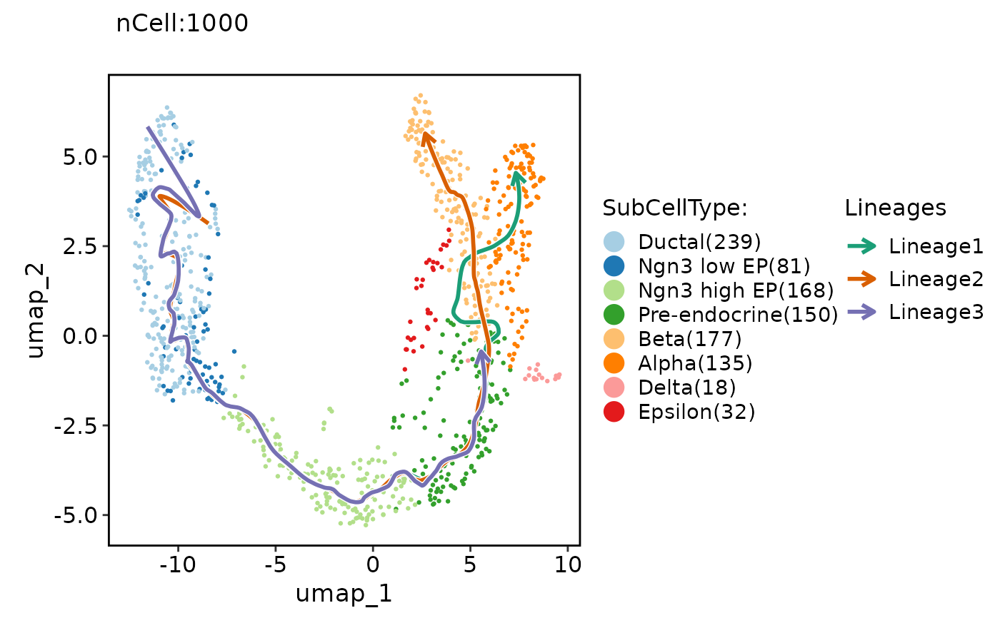

Runs the Slingshot algorithm on a Seurat object.
Usage
RunSlingshot(
srt,
group.by,
reduction = NULL,
dims = NULL,
start = NULL,
end = NULL,
prefix = NULL,
reverse = FALSE,
align_start = FALSE,
show_plot = TRUE,
lineage_palette = "Dark2",
seed = 11,
...
)Arguments
- srt
A Seurat object.
- group.by
The variable to group the cells by.
- reduction
The reduction technique to use for dimensionality reduction. Default is NULL, which uses the default reduction for the Seurat object.
- dims
The dimensions to use for the Slingshot algorithm. Default is NULL, which uses first two dimensions.
- start
The starting group for the Slingshot algorithm. Default is NULL.
- end
The ending group for the Slingshot algorithm. Default is NULL.
- prefix
The prefix to add to the column names of the resulting pseudotime variable. Default is NULL.
- reverse
Logical value indicating whether to reverse the pseudotime variable. Default is FALSE.
- align_start
Logical value indicating whether to align the starting pseudotime values at the maximum pseudotime. Default is FALSE.
- show_plot
Logical value indicating whether to show the dimensionality plot. Default is TRUE.
- lineage_palette
The color palette to use for the lineages in the plot. Default is "Dark2".
- seed
The random seed to use for reproducibility. Default is 11.
- ...
Additional arguments to be passed to the
slingshotfunction.
Examples
data("pancreas_sub")
pancreas_sub <- RunSlingshot(pancreas_sub, group.by = "SubCellType", reduction = "UMAP")
#> Warning: Removed 8 rows containing missing values (`geom_path()`).
#> Warning: Removed 8 rows containing missing values (`geom_path()`).

pancreas_sub <- RunSlingshot(pancreas_sub, group.by = "SubCellType", reduction = "PCA", dims = 1:10)

CellDimPlot(pancreas_sub, group.by = "SubCellType", reduction = "UMAP", lineages = paste0("Lineage", 1:2), lineages_span = 0.1)

# 3D lineage
pancreas_sub <- Standard_SCP(pancreas_sub)
#> [2023-11-21 07:51:52.463664] Start Standard_SCP
#> [2023-11-21 07:51:52.463826] Checking srtList... ...
#> Data 1/1 of the srtList is raw_counts. Perform NormalizeData(LogNormalize) on the data ...
#> Perform FindVariableFeatures on the data 1/1 of the srtList...
#> Use the separate HVF from srtList...
#> Number of available HVF: 2000
#> [2023-11-21 07:51:53.116895] Finished checking.
#> [2023-11-21 07:51:53.117065] Perform ScaleData on the data...
#> [2023-11-21 07:51:53.206237] Perform linear dimension reduction (pca) on the data...
#> Warning: The following arguments are not used: force.recalc
#> Warning: The following arguments are not used: force.recalc
#> [2023-11-21 07:51:53.81366] Perform FindClusters (louvain) on the data...
#> [2023-11-21 07:51:53.890027] Reorder clusters...
#> [2023-11-21 07:51:53.955151] Perform nonlinear dimension reduction (umap) on the data...
#> Non-linear dimensionality reduction(umap) using Reduction(Standardpca, dims:1-13) as input
#> Found more than one class "dist" in cache; using the first, from namespace 'BiocGenerics'
#> Also defined by ‘spam’
#> Found more than one class "dist" in cache; using the first, from namespace 'BiocGenerics'
#> Also defined by ‘spam’
#> Non-linear dimensionality reduction(umap) using Reduction(Standardpca, dims:1-13) as input
#> Found more than one class "dist" in cache; using the first, from namespace 'BiocGenerics'
#> Also defined by ‘spam’
#> Found more than one class "dist" in cache; using the first, from namespace 'BiocGenerics'
#> Also defined by ‘spam’
#> [2023-11-21 07:52:02.421047] Standard_SCP done
#> Elapsed time: 9.96 secs
pancreas_sub <- RunSlingshot(pancreas_sub, group.by = "SubCellType", reduction = "StandardpcaUMAP3D")
CellDimPlot(pancreas_sub, group.by = "SubCellType", reduction = "UMAP", lineages = paste0("Lineage", 1:3), lineages_span = 0.1, lineages_trim = c(0.05, 0.95))
